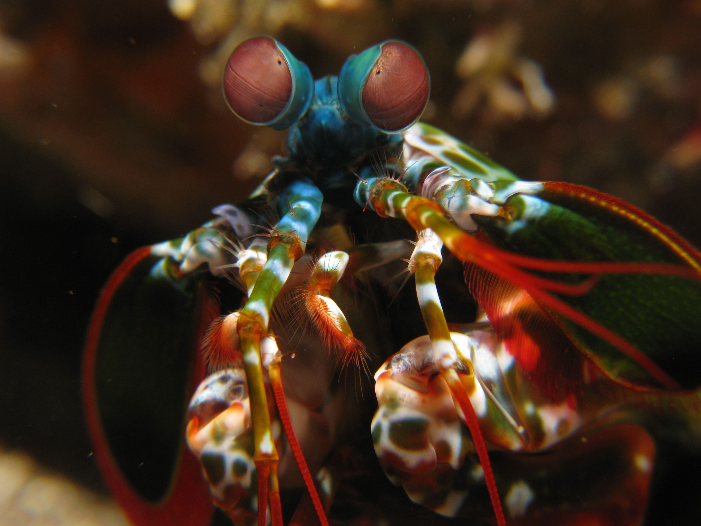

Fatos sobre o Stomatopoda
Quem é o Stomatopoda?
O Stomatopoda é conhecido também como Tamarutacas ou de Lacraias do mar no Brasil, pertence a uma ordem de crustáceos marinhos de subclasse Hopocarida, que em seu grupo tem por volta de 400 espécies!. São caracterizadas em maior parte pela morfologia da sua segunda pata torácica, que é modificada em apêndice subquelado que traz a lembrança uma pata de Louva-a-deus.
| Classificação cientifica | Conteudo |
|---|---|
| Nome cientifico | Odontodactylus scyllarus |
| Reino | Animalia |
| Filo | Arthropoda |
| Subfilo | Crustacea |
| Classe | Malacostraca |
| Subclasse | Hoplocarida |
| Ordem | Stomatopoda |
Curiosidades :
Três cores? pfff!
Nossos olhos contem milhões de celulas sensiveis a luz! essas celulas são chamadas de bastonetes e cones. Os bastonetes permitem que a gente consiga ver a luz e movimento, enquanto isso os cones nos ajudam a enxergar cores!
Cães tem dois tipos de cones receptivos de cor, azul e verde. Isso permite aos cães a enxergar azul, verde e um pouco de amarelo!
Os Humanos possuem 3 tipos de cones que permitem que a gente enxergue azul, vermelhore verde. Somente com a adição do vermelho o nosso leque de cores expande para conseguir enxergar todas as cores que nos conhecemos!
E por que estou te contando isso tudo?
Temos outros animais que possuem esses cones,que ajudam eles a perceberam mais cores que nos não conhecemos como a borboleta que tem cinco cones recptores e podem ver uma gama de cores que nos não podemos
Porem o ganhador dessa competição não é a borboleta mas o nosso protagonsita! isso mesmo ele o Stomatopoda! essa criatura maravilhosa possui exatamente 16 cones receptores de cor!!!
É cor para não acabar nunca mais! esse pequeno amigo colorido consegue ver um mundo muito mais complexo que o nosso em termo de cores, deve ser por isso que ele é tão colorido!

Um Santo? pfff! :
Um animal tão gracioso e elegante como esse deve ser basicamente um santo aquatico não? ERRADO! esse nosso pequeno amigo na verdade é terror marinho!
Por qual motivo você me pergunta?
Primeiramente nosso amiguinho aqui possui duas patas bem especiais na frente de seu corpinho! essas patas aceleram na mesma velocidade do tiro de um rifle de calibre 22! e em menos de três milésimos de segundo consegue acerta um golpe de 1,500 newtons de força (aproximademente 150 kg), os membros dessa criaturinha se movem tão rapido que a agua em volta deles evapora! em um processo conhecido como supercavitação que quando colapsadas produzem uma onda de choque que consegue matar suas prezas mesmo que ele erre o alvo.
